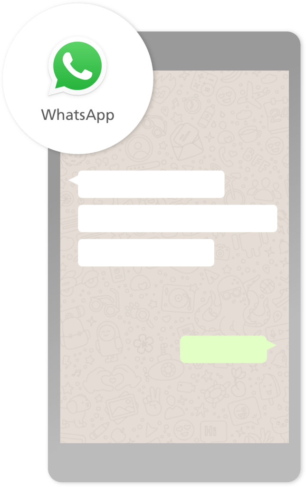

O que Você tem que Saber, Antes de Acessar o WhatsApp.

1. Abrir e compartilhar links suspeitos; Ao se deparar com um link no app, observe bem a sua composição e questione: é um site conhecido? Há algo de estranho nos caracteres? No contexto da conversa, faz sentido o envio do link? Esses podem ser indicadores de spam, vírus e outras coisas indesejáveis. Na dúvida, vale também perguntar a quem mandou o link.
2. Esquecer de ativar a verificação em duas etapas; Um mecanismo importante para aumentar sua segurança no WhatsApp é a autenticação em duas etapas. Com ele, qualquer tentativa de verificar o número de telefone no aplicativo deve ser acompanhada de uma senha de seis dígitos escolhida pelo próprio usuário. A funcionalidade está disponível para smartphones Android e iPhone (iOS). Para ativá-la, abra o WhatsApp, acesse “Configurações” → “Conta” → “Verificação em duas etapas” → “Ativar”.
3. Usar o WhatsApp Web em qualquer PC; Alguns cuidados são necessários para manter a sua privacidade e segurança. Evite utilizar o serviço em máquinas de outras pessoas ou de uso coletivo. Se realmente precisar, ao final, tenha certeza de que saiu de sua conta. Caso contrário, outros usuários poderão visualizar as suas mensagens.
4. Ativar o download automático de mídias; Os vídeos, fotos e áudios recebidos pelo WhatsApp podem consumir uma quantidade enorme de dados e armazenamento. Configure o app para que você tenha que optar pelo download de cada mídia ao receber as mensagens. Dessa forma, você poupa memória do seu smartphone e garante mais Internet durante o mês. Para fazer esses ajustes, acesse “Configurações” → “Dados e armazenamento” → “Download automático”.
5. Desativar o backup automático; Com o backup de conversas do WhatsApp, os usuários não correm o risco de perder suas mensagens e arquivos caso o celular tenha um problema,ou seja roubado, por exemplo. O recurso é útil ainda simplesmente para a troca de aparelhos. Para isso, no app para Android ou no iPhone, vá até “Configurações” → “Conversas” → “Backup de conversas” para ativar ou configurar a função. Depois, todas as suas informações estarão guardadas para caso necessite resgatá-las novamente.
DESENVOLVIDO POR:
Sebastião Rone,Amanda Felix e Vyctor Moura